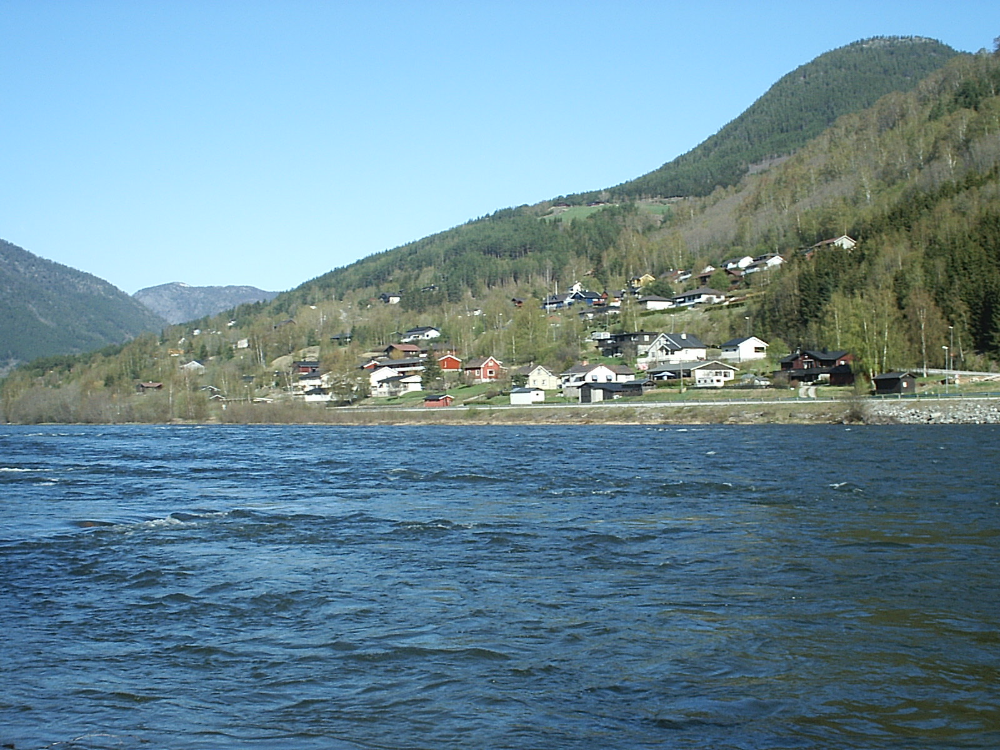
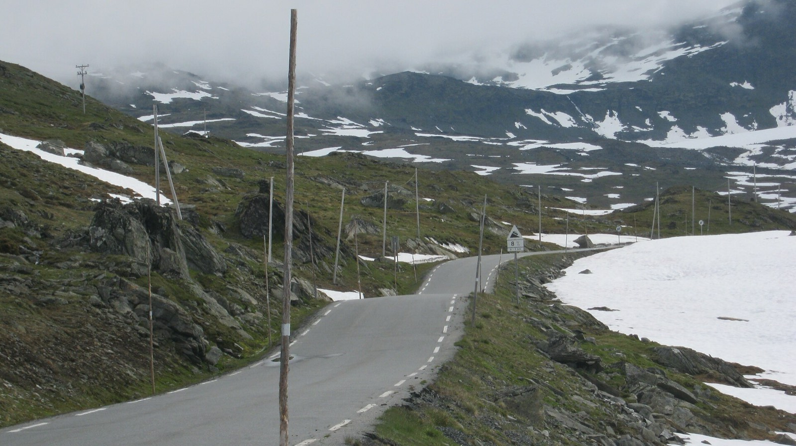
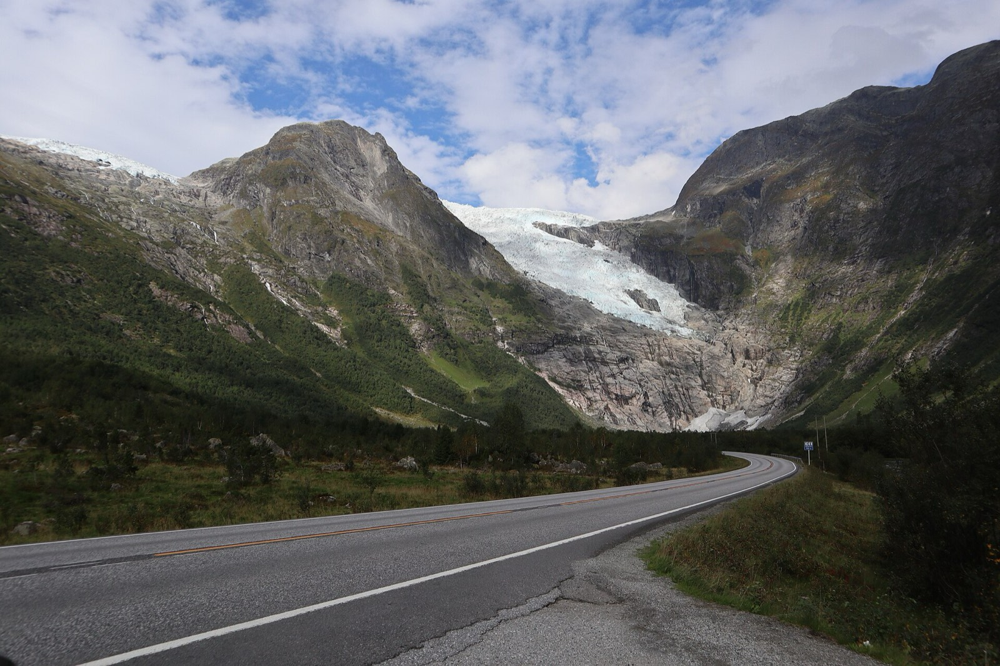
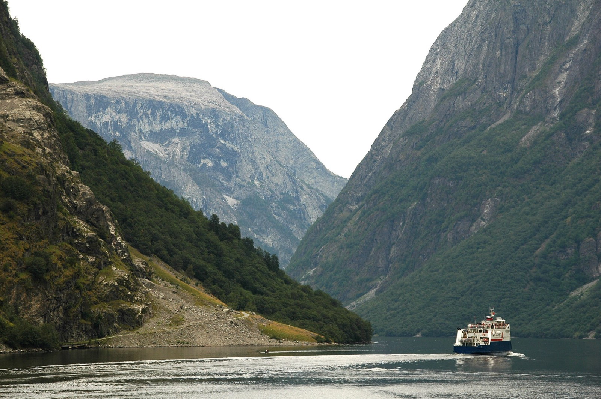
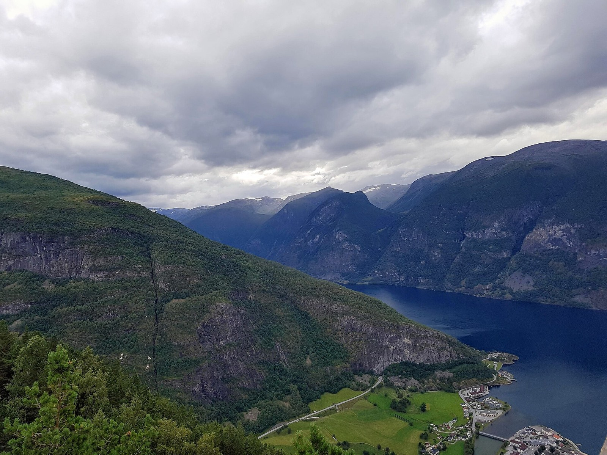
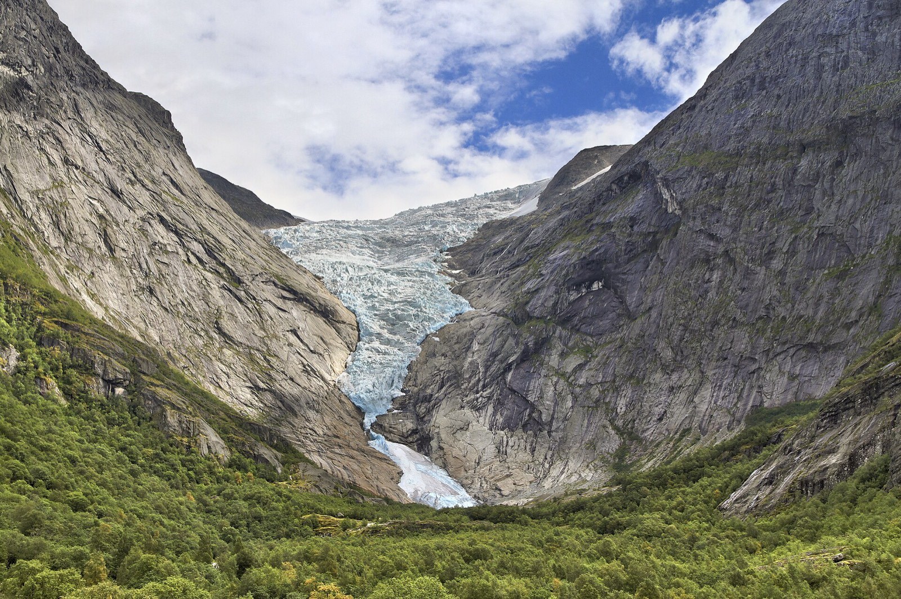
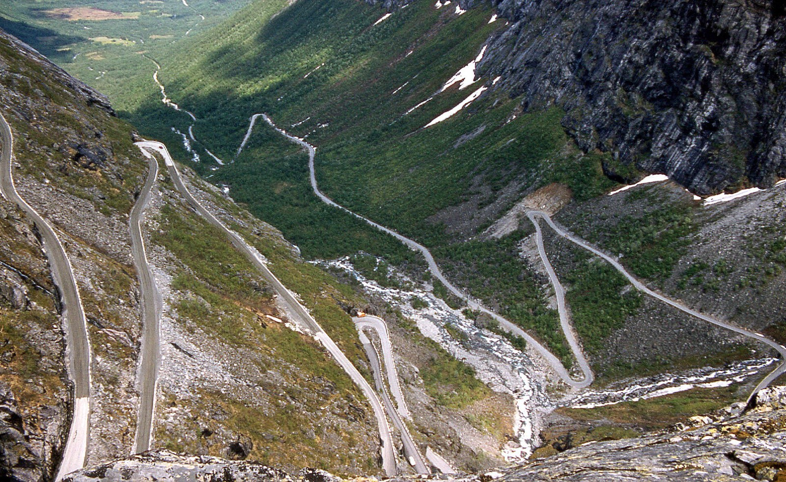
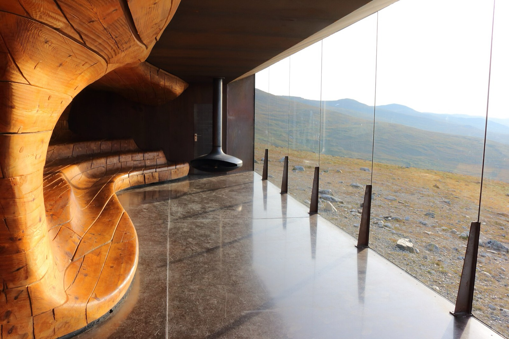
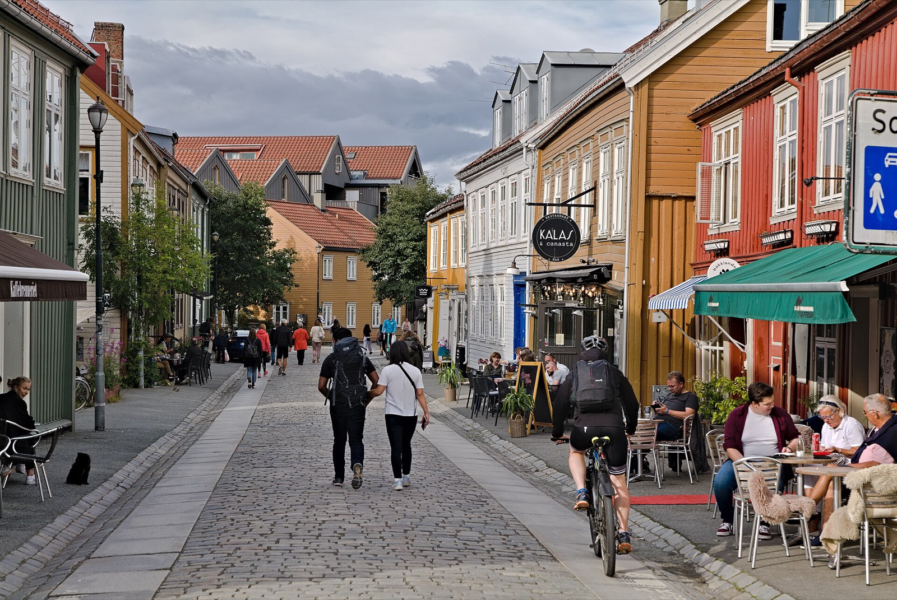
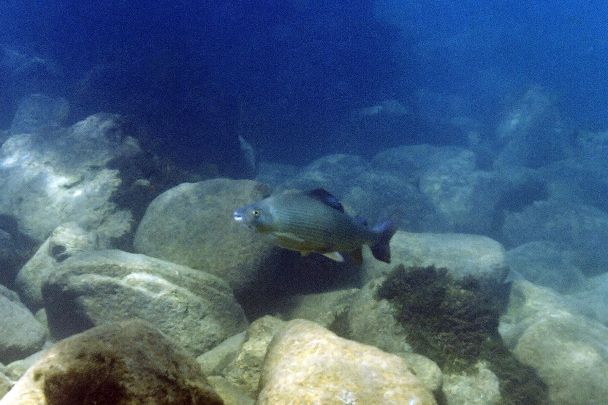

1Aug 7
Travel
Land in Oslo
Flights from the US usually land in the early evening. Collect the car, buy dry goods and a data plan, and sleep in Oslo or near the airport. Keep it light.
 Photo: Ximonic, CC BY-SA 3.0
Photo: Ximonic, CC BY-SA 3.0
Two weeks by car from Oslo to Trondheim through fjord country: over the Sognefjell to the Sognefjord, its glacier and fjord arms, Geiranger, Trollstigen and the Dovre mountains, with an easy evening or two on a trout river.
The hut trip stays high, in two mountain areas. This one goes west and north to meet the sea: over the Sognefjell pass to the Sognefjord, up its glacier arm at Fjærland, down the narrow Nærøyfjord, into the Nordfjord valleys, then to the Geirangerfjord, over Trollstigen and through the Dovre mountains to Trondheim. It shares almost nothing with the hut plan except Oslo and one river.
You carry a day pack, not a kit. You sleep in the same bed for a couple of nights at a time, choose each day from the forecast, and a wet day is a ferry and a bakery instead of a problem. The trade-off is that the high interior is out of reach, and a car trip in August shares the famous roads and fjords with a lot of other people and some cruise ships.
Dates are Aug 7–20, 2027 (planned in Nov 2026): land in Oslo on Aug 7, fly home from Trondheim on Aug 20. Two travellers, comfortable with some long driving days. Everything marked VERIFY came from memory or thin sources. Drive times especially are rough and should be checked in a mapping app.
The shape: Oslo → Gudbrandsdalen → Sognefjord (Luster, Fjærland, Flåm) → Nordfjord (Loen) → Geiranger → Åndalsnes → Dovre → Trondheim. The first half is fjords and glaciers, the second half is passes and mountain roads. Fishing is one firm session and a couple of optional ones.
Pins are place locations, and the lines are straight connections between them, not real roads. Click the map to enable scroll zoom. Without JavaScript, the day-by-day list below has everything.
Red is a hiking day, blue a fishing day, grey travel. Tap a day to jump to it.
Flights from the US usually land in the early evening. Collect the car, buy dry goods and a data plan, and sleep in Oslo or near the airport. Keep it light.
Drive north on the E6 up Gudbrandsdalen to the Otta area, about four and a half hours VERIFY, with lunch in Lillehammer. An evening on the Lågen or the Otta with a day licence (fiskekort) from inatur.no: brown trout and grayling both present. Check the minimum size on your ticket. Sleep near Otta.

Drive to Lom, then over the high Sognefjellsvegen (road 55) to the Sognefjord, about three to four hours in all VERIFY. The road climbs above the treeline past glaciers and lakes. At the fjord, visit the Urnes stave church, reached by a short ferry VERIFY. The pass is seasonal, so check it is open VERIFY. Sleep around Luster.

Drive to Fjærland, about two hours VERIFY, a quiet fjord village below the Jostedalsbreen glacier. Walk to the Bøyabreen glacier viewpoint and visit the Norwegian Glacier Museum VERIFY. Guided glacier walks also run in the area if you want to step onto the ice VERIFY. Sleep in Fjærland.

Back through Sogndal and the long Lærdal tunnel to Flåm, about two and a half hours VERIFY. In the afternoon, ride the Flåm Railway, a famously steep scenic line up into the mountains and back VERIFY. Sleep in Flåm.
Take the passenger ferry on the narrow Nærøyfjord between Flåm and Gudvangen, or paddle it with a local guide VERIFY. The fjord is UNESCO-listed, with waterfalls dropping straight into it. Then drive up to the Stegastein viewpoint, a platform jutting out over the Aurlandsfjord. Second night in Flåm.


A long driving day north to Loen in the Nordfjord valley, about four to five hours with a ferry or two VERIFY. Break it up at a viewpoint or a bakery. Sleep in Loen or Stryn.
Walk up the Briksdal valley to the glacier lake below Briksdalsbreen, an arm of the Jostedalsbreen ice cap VERIFY. It is a short walk, and an easy day after the driving. Spend the rest of it by the water; a second optional trout session on a local river or lake if you want one (ask the local outdoor shop) VERIFY. Second night in Loen.

Over the mountains via the Strynefjell road to the Geirangerfjord, roughly two hours VERIFY. Walk to a viewpoint above the fjord, take the sightseeing boat or rent a kayak, and see the waterfalls from the water. Geiranger is the busiest stop on the trip in August, with cruise ships in the fjord, so book a room early and aim to be out before the buses.
A short ferry out of the fjord valley, then over the Trollstigen road, with its eleven hairpins, down to Åndalsnes. It normally opens in the spring and runs until autumn, but it can close at short notice in heavy rain or rockfall VERIFY. Narrow and slow; don't drive it tired.

The classic here is the Romsdalseggen ridge, a long and exposed day, so it needs clear weather VERIFY. A shorter walk to a viewpoint above Åndalsnes is the safer pick if the cloud is low. Second night in Åndalsnes.
Drive back east through Dombås (about two and a half hours VERIFY) and into Dovrefjell National Park. A short walk from the Hjerkinn side leads to a pavilion with a view of the Snøhetta massif and the wild reindeer country; musk oxen live in the area, and guided musk-ox safaris run from here, a good use of a morning if you want to see them VERIFY. Sleep in Dovre or Oppdal.

Drive to Trondheim (about two and a half to three hours VERIFY). Return the car, then spend the afternoon at Nidaros Cathedral and in Bakklandet, the old wooden quarter by the river. Sleep in Trondheim: home flights leave early.

Dry the waders. Disinfect or fully dry the fishing gear before you leave (see Fishing).
Days 7 and 8 (the Nordfjord pair) and day 11 are your flex days. Fjords and passes are better in cloud than peaks are, and the glacier valleys are lovely in rain, so most days bend to the weather. The Romsdal ridge and any glacier walk are the ones that need clear skies. Check yr.no the night before and again at breakfast.
| Variant | What changes | Trade-off |
|---|---|---|
| Add the huts | Swap the first half for a hut chain in Rondane and Jotunheimen. See the hut version. | More depth in the high country, no fjords and a lot more booking. |
| Guides for the big days | Hire local guides for a glacier walk at Fjærland or Briksdal, a kayak trip on the Nærøyfjord, or a musk-ox safari on day 12 VERIFY. | Safer and more rewarding on the glacier and water days, and an extra cost. Book early in August. |
| Slower | Drop Flåm or Åndalsnes and spend the days in Fjærland or Loen. | Less ground and less driving. |
| Oslo round trip | Skip the north: after Geiranger, drive back to Oslo through Gudbrandsdalen (about six hours VERIFY). | Simpler flights and no one-way car fee, but you lose Trollstigen, Dovre and Trondheim. |
Thirteen nights, ten bases. The two-night stops (Flåm, Loen, Åndalsnes) are where the pace slows. Book the small, popular places first: Fjærland, Flåm, Loen, Geiranger and Åndalsnes rooms go early in summer. Self-catering cabins with a kitchen make the vegetarian question easy.
| Nights | Base | Why |
|---|---|---|
| Aug 7 | Oslo or near the airport | Landing evening, car pick-up. |
| Aug 8 | Otta or the Sel valley | Lågen evening, a long drive north. |
| Aug 9 | Luster (Sognefjord) | End of the Sognefjell pass day. |
| Aug 10 | Fjærland | The glacier and its museum. |
| Aug 11–12 | Flåm (2 nights) | Railway, Nærøyfjord and Stegastein. |
| Aug 13–14 | Loen (2 nights) | Briksdalsbreen and a slow day. |
| Aug 15 | Geiranger | The fjord. Book early. |
| Aug 16–17 | Åndalsnes (2 nights) | Trollstigen and a hike day. |
| Aug 18 | Dovre or Oppdal | Dovrefjell, then an easy morning to Trondheim. |
| Aug 19 | Trondheim | Early flight home. |
One firm session and a couple of optional ones, not a fishing trip. Brown trout (ørret) and grayling (harr) rise to a dry fly in the valley rivers, best in the evening. August water is low and clear, so go light on the tippet.

This is the easy version. You are never relying on a single fixed hut dinner: every base has a supermarket (Coop, Rema 1000 and Kiwi are everywhere) and most have a café or restaurant. Self-catering cabins with a kitchen make it simpler still.
Any time left on day 1, or a morning on day 2 if you start the drive late. Tips passed on by a friend of a friend, not checked by us: Frogner Park and the Vigeland sculptures, the Munch Museum, the Kon-Tiki Museum, Grünerløkka for wandering, Vippa for a drink and a bite, and Åpent Bakeri for pastries. Check opening hours and menus before you plan around any of them.
The afternoon of day 13. Nidaros Cathedral, and Bakklandet, the old wooden quarter on the east bank of the river, with cafés and a bike lift VERIFY. It is a pleasant place to hand the car back and have a calm last evening.
Norway's allemannsretten lets you walk on uncultivated land, but keep well away from houses, close gates and take your rubbish with you. Fishing is not covered by it: you still need a licence.
| When | Do |
|---|---|
| Nov 2026 (now) | Settle the route. Check passports. |
| Winter 2026–27 | Book rooms for Fjærland, Flåm, Loen, Geiranger and Åndalsnes first; they fill earliest. Book the car, including the Trondheim drop-off. |
| Spring 2027 | Book the other rooms. Check road opening dates for the Sognefjell pass and Trollstigen, and ferry rules. Replace or plan to disinfect fishing gear. |
| Late July to early August | Buy fishing licences, check river levels and the forecast, pack the lunch kit. |
This page was built from memory and a few light searches (road seasons). It has no river-by-river reports and no confirmed 2027 prices. Treat it as a well-shaped draft, not a reservation.


.jpg){kind=link}
_-_panoramio.jpg){kind=link}


.jpg){kind=link}